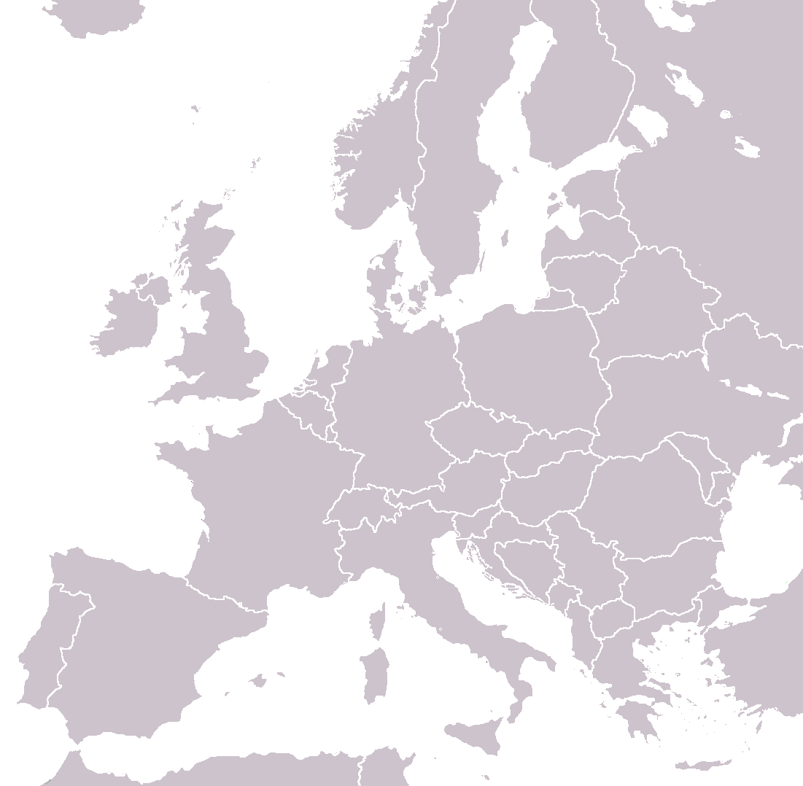

Stockholm

Bread

Feta wrap

Fudge cakelet

Lammkorv

Lingonberries and pickled cucumber

Nigiri

Pickled herring

Reindeer
Sashimi

Smørrebrød

Sundbergs Konditori

Swedish meatballs

trenette ai frutti di mare
Copenhagen

BBQ Pork, salad, potatoes, aioli, spicy cole slaw, grilled eggplant squash red peppers

Eggs bacon sausage Greek yogurt, rye, cheese, chicken salad

Haribo licorice

Kebap

Konditori

Lamb shanks

Pistachio, Strawberry, Chocolate ice cream

Rejer sandwich

Roast beef sandwich, pastry

Roast beef smørrebrød

elderflower juice

elderflower

grilled apples w: ice cream

smørrebrød
Cologne

Grillwurst

Herring with beet root sauce

ox cheek with potato cake

pomegranate, spice yogurt

strawberry colada
Bruges

B&B Chocolate pastry

B&B cheese & meat breakfast

B&B cheeses

B&B fruit

B&B meat and cheese

B&B omelet

B&B pancakes

B&B salami

B&B yogurt

Cabillaud au fumet de langoustines

Green olives, cheese

Grilled meats

chocolate tart
Paris

Croquetier au crabe

Crèpes jambon fromage

Lamb

Salmon, salad, rice

Sandwich poulet, emmental, pomme

soupe de fraises
Barcelona

Beef carpaccio

Calamari tapas

Cheesecake

Chicken tapas

Chorizo stew

Cinamon sugar croissant

Creme Catalan with lemon sorbet

Monkfish with pesto

Mushroom, shrimp tapas

Oysters

Pinchos

Pork, shallots

Potato salad tapas

Sea bass

Seafood paella

Tuna tataki

duck tapas

lemon pie
Stuttgart

Grilled veal

Maultaschen
Bologna

Buffalo tomato caprese

Duck breast with carmelized pears

Eggplant parmesan

Shank of pork

Strozzapreti Duck Bolognese

Tagliatelle Bolognese

Tagliatelle

ravioli with pumpkin
Venice

Beef carpaccio

Ham cannelloni

Pasta with mushrooms
.jpg)
Sicilian Pizza (anchovies, sausage)

Veggie Pizza

eggplant pastry
Florence

Baked lasagna

Bruschetta

Calzone neopoletano

Fragola limone gelato

Mixed appetizers

Renaissance pasta

pork ribs

tortilini panna e prosciutto
Rome

Chicken chimichanga

Chocolat-ier croissant

Chocolate croissant

Gelato

Mousse

Salmon

Salmone bruschetta
.jpg)
Spaghetti (lemon cream sauce, imitation crab)

campiteli sandwich

dumplings

fettuccine ai frutti di mare
Athens

Beef tapas

Fried seafood

Goat cheese mushroom tapas

Moussaka

Ouzo

Pita, tsatsaki

Pork gyros

Stuffed burger

Thinasis kebap

mytiline cheese

spicy cheese
Budapest

B&B meat, cheese, peppers

Goulash

Langos

Veal cheek, chive dumplings
Vienna

Grilled chicken salad

Kasekrainer

Pumpkin soup

Salad

Spaghetti frutti di mare

Wienerschnitzel
Prague

Beef stroganoff

Big Mac meal

Chicken sandwich

Grilled cheese

Kielbasa

Pork steak, horseradish, baked potato

Rosti
Munich

Africola

Fried noodles

Insalata mista

Pizza

Tagliatelle al salmone

chicken and Asia noodles

penne quattro formaggi
Zurich

Quiche

Sausage, saurkraut, rosti

Vegetarian buffet
Lucerne

Cheese fondue, sausage

Pouletschnitzel
Berne

Chicken with bacon and tomatoes

Dr. Pepper

Pizza

lemon risotto

mozzarella ham salad
Madrid

Calimare

Churros and chocolate

Lamb shank

Spanish omelette
Aachen

Apfel Advent Stern

Apple, berry pie

Bratapfel

Chocolate almond pastry

Currywurst

Duck

Dönner

Eggs benedict

Flammkuchen

Hot dog

Lammhaxe

Macchiato

Maronencremesuppe

Mussels

Nata

Pide dönnerli

Pineapple and cheese bread

Pork pastry

Potato soup

Radler, sweet popcorn

Reibekuchen

Rostbratwurst

Schnitzel

Schokoecken

Späzle, goulash

bakfisch